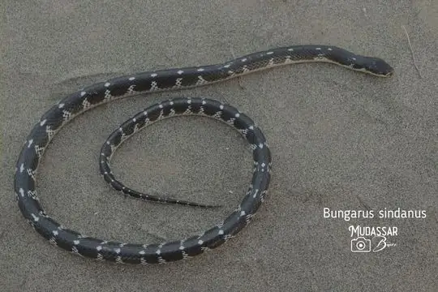
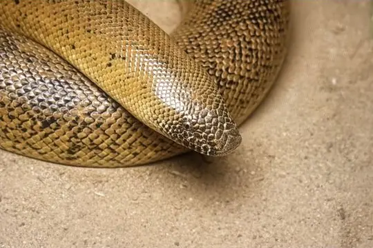

Snakes of Pakistan
77 snake species are recorded in Pakistan in SnakeList: 28 venomous and 49 non-venomous, from 9 families.
- 77species
- 28venomous
- 49non-venomous
- 9families
These totals count the snakes SnakeList records as living in Pakistan. A species counts if it is recorded anywhere in the country, so not every snake lives in every region.
Species
Showing 77 species
 Annulated Sea SnakeHydrophis cyanocinctus
Annulated Sea SnakeHydrophis cyanocinctus Asian sand viperEristicophis macmahoni
Asian sand viperEristicophis macmahoni Banded KukriOligodon arnensis
Banded KukriOligodon arnensis Banded Racer (fasciolata)Argyrogena fasciolata
Banded Racer (fasciolata)Argyrogena fasciolata Banded Racer (fasciolatus)Lycodon fasciolatus
Banded Racer (fasciolatus)Lycodon fasciolatus Bar-necked KeelbackFowlea schnurrenbergeri
Bar-necked KeelbackFowlea schnurrenbergeri Barred Wolf SnakeLycodon striatus
Barred Wolf SnakeLycodon striatus- No photo yetBombay Sea SnakeHydrophis mamillaris
- No photo yetBrahui RacerPlatyceps noeli
- No photo yetBraid SnakePlatyceps ladacensis
 Buff Striped KeelbackAmphiesma stolatum
Buff Striped KeelbackAmphiesma stolatum Cantor’s black-headed snakeSibynophis sagittarius
Cantor’s black-headed snakeSibynophis sagittarius Central Asian CobraNaja oxiana
Central Asian CobraNaja oxiana- No photo yetCheckered KeelbackXenochrophis piscator
 Chequered KeelbackFowlea piscator
Chequered KeelbackFowlea piscator Common Cat SnakeBoiga trigonata
Common Cat SnakeBoiga trigonata Common KraitBungarus caeruleus
Common KraitBungarus caeruleus Common SeasnakeHydrophis schistosus
Common SeasnakeHydrophis schistosus Common Wolf Snake (aulicus)Lycodon aulicus
Common Wolf Snake (aulicus)Lycodon aulicus Dark-headed Dwarf Racer (persicus)Eirenis persicus
Dark-headed Dwarf Racer (persicus)Eirenis persicus Daudin's BronzebackDendrelaphis tristis
Daudin's BronzebackDendrelaphis tristis Derafshi SnakeLytorhynchus ridgewayi
Derafshi SnakeLytorhynchus ridgewayi- No photo yetDiadem SnakeSpalerosophis diadema
 Dwarf Sand BoaEryx miliaris
Dwarf Sand BoaEryx miliaris Dwarf SeasnakeHydrophis caerulescens
Dwarf SeasnakeHydrophis caerulescens Eastern Russel's ViperDaboia siamensis
Eastern Russel's ViperDaboia siamensis Forskal Sand SnakePsammophis schokari
Forskal Sand SnakePsammophis schokari Glossy-bellied RacerPlatyceps ventromaculatus
Glossy-bellied RacerPlatyceps ventromaculatus- No photo yetGünther's sea snakeMicrocephalophis cantoris
 Himalayan KeelbackHerpetoreas platyceps
Himalayan KeelbackHerpetoreas platyceps Himalayan PitviperGloydius himalayanus
Himalayan PitviperGloydius himalayanus Hook-snouted Worm SnakeMyriopholis macrorhyncha
Hook-snouted Worm SnakeMyriopholis macrorhyncha Indian CobraNaja naja
Indian CobraNaja naja Indian Desert Tiger SnakeTelescopus rhinopoma
Indian Desert Tiger SnakeTelescopus rhinopoma Indian Rock PythonPython molurus
Indian Rock PythonPython molurus Lead KeelbackRhabdophis plumbicolor
Lead KeelbackRhabdophis plumbicolor Leith's Sand SnakePsammophis leithii
Leith's Sand SnakePsammophis leithii Levantine ViperMacrovipera lebetinus
Levantine ViperMacrovipera lebetinus Loos SnakeOligodon taeniolatus
Loos SnakeOligodon taeniolatus Maynard's Longnose Sand SnakeLytorhynchus maynardi
Maynard's Longnose Sand SnakeLytorhynchus maynardi Oriental RatsnakePtyas mucosa
Oriental RatsnakePtyas mucosa Ornate Sea SnakeHydrophis ornatus
Ornate Sea SnakeHydrophis ornatus Painted Keelback (cerasogaster)Xenochrophis cerasogaster
Painted Keelback (cerasogaster)Xenochrophis cerasogaster Persian Horned ViperPseudocerastes persicus
Persian Horned ViperPseudocerastes persicus Philippine CobraNaja philippinensis
Philippine CobraNaja philippinensis Plin's Banded RacerPlatyceps plinii
Plin's Banded RacerPlatyceps plinii Rainbow Mud SnakeEnhydris enhydris
Rainbow Mud SnakeEnhydris enhydris Red Sand BoaEryx johnii
Red Sand BoaEryx johnii Red-spotted Diadem SnakeSpalerosophis arenarius
Red-spotted Diadem SnakeSpalerosophis arenarius Rough-tailed Sand BoaEryx conicus
Rough-tailed Sand BoaEryx conicus Royal snakeSpalerosophis atriceps
Royal snakeSpalerosophis atriceps Russell's ViperDaboia russelii
Russell's ViperDaboia russelii Sand Snake (condanarus)Psammophis condanarus
Sand Snake (condanarus)Psammophis condanarus Saw-scaled ViperEchis carinatus
Saw-scaled ViperEchis carinatus Sikkim KeelbackHerpetoreas sieboldii
Sikkim KeelbackHerpetoreas sieboldii
Sind KraitBungarus sindanus- No photo yetSind River Mud SnakeMintonophis pakistanicus
 Sindh Awl-headed SnakeLytorhynchus paradoxus
Sindh Awl-headed SnakeLytorhynchus paradoxus- No photo yetSindh RacerPlatyceps sindhensis
 Sindh Thread SnakeMyriopholis blanfordi
Sindh Thread SnakeMyriopholis blanfordi
Sistan Sand BoaEryx sistanensis- No photo yetSlender Worm SnakeIndotyphlops porrectus
- No photo yetSouth India Worm SnakeIndotyphlops pammeces
 Spotted Desert RacerPlatyceps karelini
Spotted Desert RacerPlatyceps karelini Spotted Whip SnakeHemorrhois ravergieri
Spotted Whip SnakeHemorrhois ravergieri St. John's KeelbackFowlea sanctijohannis
St. John's KeelbackFowlea sanctijohannis Steppe Ribbon RacerPsammophis lineolatus
Steppe Ribbon RacerPsammophis lineolatus Striped Sea SnakeHydrophis fasciatus
Striped Sea SnakeHydrophis fasciatus Travancore Wolf SnakeLycodon travancoricus
Travancore Wolf SnakeLycodon travancoricus Trinket SnakeCoelognathus helena
Trinket SnakeCoelognathus helena Viperine Sea SnakeHydrophis viperinus
Viperine Sea SnakeHydrophis viperinus Wadi RacerPlatyceps rhodorachis
Wadi RacerPlatyceps rhodorachis Yellow Sea SnakeHydrophis spiralis
Yellow Sea SnakeHydrophis spiralis Yellow-bellied Sea SnakeHydrophis platurus
Yellow-bellied Sea SnakeHydrophis platurus- No photo yetIndotyphlops ahsanai
- No photo yetIndotyphlops madgemintonae
- No photo yetPseudoboa krait
No snakes in Pakistan match.
Pakistan’s snakes in numbers
- Families: Colubridae 38, Elapidae 15, Viperidae 7, Boidae 4, Psammophiidae 4, Typhlopidae 4, Homalopsidae 2, Leptotyphlopidae 2, Pythonidae 1.
- 5 are recorded in no other country in SnakeList: Brahui Racer, Sind River Mud Snake, Sindh Racer, Indotyphlops ahsanai, Indotyphlops madgemintonae.
States and provinces
The states and provinces where SnakeList records snakes, with how many species each has. Each page has its families, venomous snakes, the species found only there, its cities and neighbours.
- Azad Kashmir 2 species
- Balochistan 1 species
- Khyber Pakhtunkhwa 6 species
- Punjab 20 species
- Sindh 11 species
No place matches that.
Cities
Its biggest cities, biggest first. Snakes are recorded by state or province, not by city, so each city page shows the snakes of the state or province it is in.
- Karachi Sindh
- Lahore Punjab
- Faisalabad Punjab
- Rawalpindi Punjab
- Multan Punjab
- Hyderabad Sindh
- Gujranwala Punjab
- Peshawar Khyber Pakhtunkhwa
- Rahim Yar Khan Punjab
- Quetta Balochistan
- Muzaffarābād Azad Kashmir
- Battagram Khyber Pakhtunkhwa
- Kotli Azad Kashmir
- Islamabad Khyber Pakhtunkhwa
- Bahawalpur Punjab
- Sargodha Punjab
- Sialkot Punjab
- Sukkur Sindh
- Larkana Sindh
- Shekhupura Punjab
- Bhimbar Azad Kashmir
- Jhang Sadr Punjab
- Gujrat Punjab
- Mardan Khyber Pakhtunkhwa
- Malir Cantonment Sindh
No place matches that.